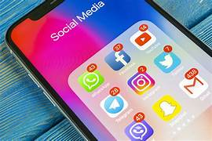

Effects of Social Media on Individuals

- One unfortunate side-effect of social media is that many of us get our sense of worth from it. We worry about how many likes,
shares, and comments we get on our posts and feel good or bad about ourselves based on those things.
- We feel a pressure to create a false sense of perfection or happiness. We need to look great in every photo, we need to show
we’re having a good time all the time, and we can’t ever let it look like we’re having a bad day or struggling through stuff.
- Remember that social media creates a lot of unrealistic expectations and that everyone struggles with self-confidence from
time-to-time. Our worth doesn’t come from social media. Do whatever you have to not to forget it!
Solutions on this Issue
- Take a social media break.Deleting apps from your phone without deleting your account can allow you to refocus on school,
work, or in-person relationships.
- Remember that what others post doesn’t always reflect reality. “Many people just post the good things that happen in their lives,”
Vidal says. Pay attention to times when you find yourself comparing your life with what you see in others’ posts and remind yourself
that’s only a snapshot of that person’s life; that person likely has other day-to-day struggles that they’re not sharing on social media,
too.
- Invest time in offline social relationships, too. Work on balancing your in-person and online lives so that more of your time goes
toward face-to-face relationships than digital ones. To do this, Vidal suggests investing more of your time in social interactions
that aren’t internet-based. Schedule a coffee date, go for a walk with a friend, or plan on meeting up for a weekly
(or more frequent) workout with someone you want to spend more time with.
- Avoid using social media at night. One study Vidal and her colleagues assessed in their review article suggested that nighttime
social media use has a worse impact on mental health — it can raise depressive and anxious symptoms and affect your sleep quality.
Plus, using social media before bedtime is more likely to be passive (known to be more harmful to mental health) rather than active
(which is less so linked with health risks), says Vidal.
- Delete social media completely. No one says you must use social media if you don’t want to. If it’s doing you more harm than good,
consider deleting all of your social media apps and accounts, says Vidal.